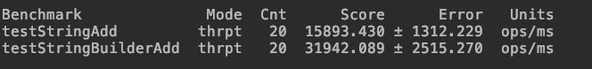

demo
首先引入JMH相关jar
<dependency>
<groupId>org.openjdk.jmh</groupId>
<artifactId>jmh-core</artifactId>
<version>1.21</version>
</dependency>
<dependency>
<groupId>org.openjdk.jmh</groupId>
<artifactId>jmh-generator-annprocess</artifactId>
<version>1.21</version>
<scope>provided</scope>
</dependency>
简单代码
public class test {
@Benchmark
public static void test() {
Thread.sleep(1000);
}
public static void main(String[] args) throws RunnerException {
Options options = new OptionsBuilder()
.include(test.class.getCanonicalName())
.forks(1)
.build();
new Runner(options).run();
}
}
通过运行这行代码我们可以基本上看到这个方法的执行效率为0.996 ops/s也就是说，大概1秒钟执行一次，符合我们的代码编写。
复杂一点的例子,比较淡出的字符创拼接以及采用StringBuilder进行拼接
/**
* 比较字符串直接相加和StringBuilder的效率
*
* @author XiongNeng
* @version 1.0
* @since 2018/1/7
*/
@BenchmarkMode(Mode.Throughput)
@Warmup(iterations = 3)
@Measurement(iterations = 10, time = 5, timeUnit = TimeUnit.SECONDS)
@Threads(8)
@Fork(2)
@OutputTimeUnit(TimeUnit.MILLISECONDS)
public class test {
@Benchmark
public void testStringAdd() {
String a = "";
for (int i = 0; i < 10; i++) {
a += i;
}
print(a);
}
@Benchmark
public void testStringBuilderAdd() {
StringBuilder sb = new StringBuilder();
for (int i = 0; i < 10; i++) {
sb.append(i);
}
print(sb.toString());
}
private void print(String a) {
}
public static void main(String[] args) throws RunnerException {
Options options = new OptionsBuilder()
.include(test.class.getSimpleName())
.build();
new Runner(options).run();
}
}

主要看一下最后的输出结果，通过结果我们基本上可以看到字符串拼接StringBuilder的速度还是比较快效率大概是单纯的字符创拼接的2倍多。
注解解释
@BenchMarkMode
基准测试类型，共包含5种
- Throughput: 整体的吞吐量，例如 “1秒内可以执行多少次调用”
- AverageTime: 调用的平均时间，例如 "每次滴啊用平均耗时多少毫秒"
- SampleTime: 随机取样，最后输出结果的分布，例如“99%的调用在多少毫秒内，99.99%的调用在多少毫秒内”
- SingleShorTime: 以上模式都是默认一次iteration是1s，唯有SingleShorTime是只运行一次，往往同时吧warmup设置0，用于测试冷启动
- ALL: 以上所有的
@Warmup
上面我们提到了，进行基准测试前需要进行预热。一般我们前几次进行程序测试的时候都会比较慢， 所以要让程序进行几轮预热，保证测试的准确性。其中的参数iterations也就非常好理解了，就是预热轮数。
为什么需要预热？因为 JVM 的 JIT 机制的存在，如果某个函数被调用多次之后，JVM 会尝试将其编译成为机器码从而提高执行速度。所以为了让 benchmark 的结果更加接近真实情况就需要进行预热。
@Measurement
基准测试参数
- iterations 进行测试的轮次
- time 每轮进行的时长
- timeUnit 时长单位
@Threads
每个进程中的测试线程，这个非常好理解，根据具体情况选择，一般为cpu乘以2。
@Fork
进行 fork 的次数。如果 fork 数是2的话，则 JMH 会 fork 出两个进程来进行测试。
@OutputTimeUnit
这个比较简单了，基准测试结果的时间类型。一般选择秒、毫秒、微秒。
@Benchmark
方法级注解，表示该方法是需要进行 benchmark 的对象，用法和 JUnit 的 @Test 类似。
@Param
属性级注解，@Param 可以用来指定某项参数的多种情况。特别适合用来测试一个函数在不同的参数输入的情况下的性能。
@Setup
方法级注解，这个注解的作用就是我们需要在测试之前进行一些准备工作，比如对一些数据的初始化之类的。
@TearDown
方法级注解，这个注解的作用就是我们需要在测试之后进行一些结束工作，比如关闭线程池，数据库连接等的，主要用于资源的回收等。
参考文章 https://www.xncoding.com/2018/01/07/java/jmh.html
官方例子 https://hg.openjdk.java.net/code-tools/jmh/file/tip/jmh-samples/src/main/java/org/openjdk/jmh/samples/